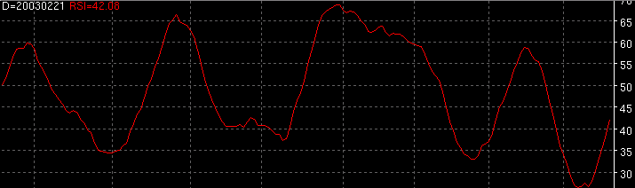

Relative Strength Index - RSI

Parameters:
Input - Data field RSI is based on
Buy Line - The buy signal threshold
Sell Line - The sell signal threshold
Period - RSI period
Smoothing Period - RSI smoothing period
Smoothing Type - RSI smoothing type
Color - RSI color
Line Type - RSI line type
Label - The text to identify the RSI plot
Description:
Formula Reference:
Syntax
RSI(Input, Smoothing Type, Period, Smoothing)
Function
Input can be either an array of bars or a formula variable array of data.
Example
RSI(Close, SMA, 14, 10)